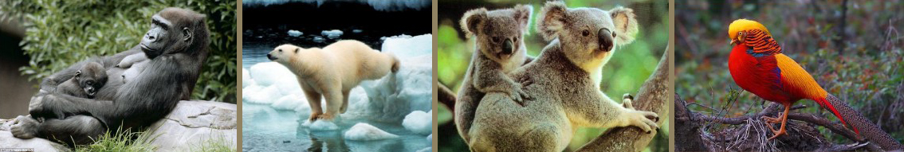

动物行为
◆ 防御
动物的防御行为是动物为对付外来侵略、保卫自身的生存、或者对本族群中其他个体发出警戒而发生的行为。
◆ 贮食
动物摄取食物，从根本上说，就是为了摄取构成躯体的营养──各种有机物和无机物，以及进行各种生理活动所必需的能量。这是动物的摄食行为。故食物丰富时，有些动物会贮存一些食物等饥饿时再取来食用。这样的行为称为贮食行为。

◆ 攻击
动物的攻击行为是指同种个体之间所发生的攻击或战斗。在动物界中，同种动物个体之间常常由于争夺食物、配偶，抢占巢区、领域而发生相互攻击或战斗。
◆ 繁殖与发育
几乎所有的动物都会进行某种类型的有性生殖。成熟的个体是双倍体或多倍体的。它们有一些特化的生殖细胞，行减数分裂以产生较小可游动的精子或较大不可动的卵子。精子和卵子会结合成为受精卵，且发育成新的个体。
许多动物也能够行无性生殖。这可能发生在孤雌生殖（成熟卵没有经过交配而产生），或一些经由断裂生殖。
受精卵一开始会发育成一个小球，称之为胚胎，在此进行重整和分化。在海绵里，胚胎幼体会游到一个新的位置上并发育成一个新的海绵。而在其他大多数的类群中，胚胎则会进行更为复杂的重整。胚胎一开始会内套以形成具有消化腔的原肠胚和两个各别的胚层－外胚层和内胚层。在大多数的情况下，还会有个中胚层在两者之间。这些胚层接着分化成各式组织和器官。